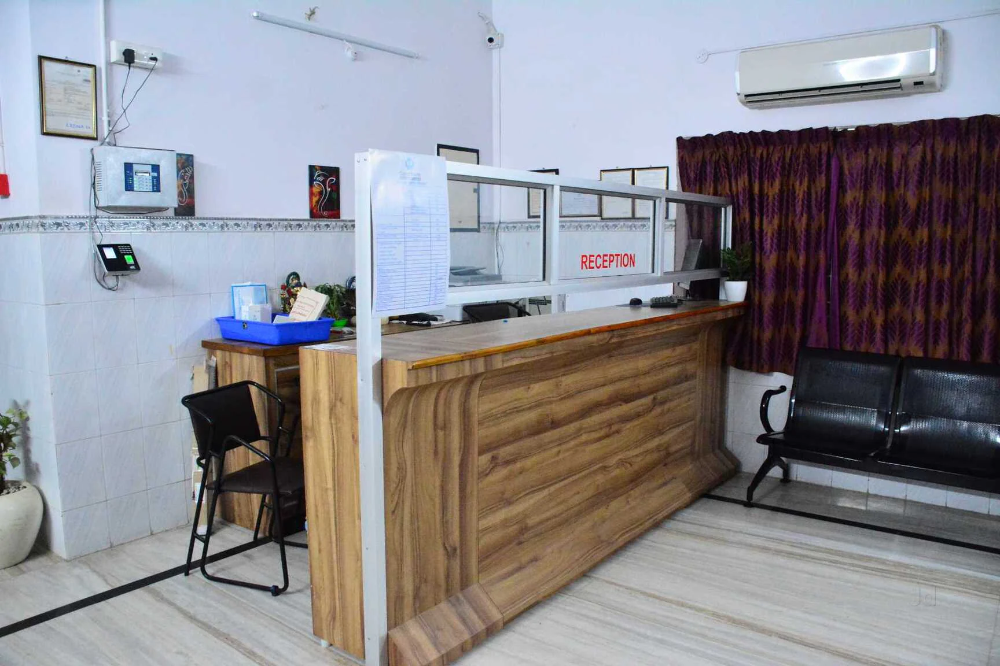

Expert-led care, modern surgical techniques, and patient-focused treatment under one roof.
A dedicated facility for comprehensive genito-urinary health.
Experienced specialists providing personalized consultation and precise diagnosis for complex conditions.
Focus on minimally invasive laparoscopic procedures and complex surgical treatments including cancer surgery.
Fully wheelchair accessible clinic located conveniently in the heart of Rajamahendravaram.
Comprehensive care for all your urological and kidney health needs.
We pride ourselves on providing a comfortable, modern, and highly organized medical facility designed for your peace of mind.
